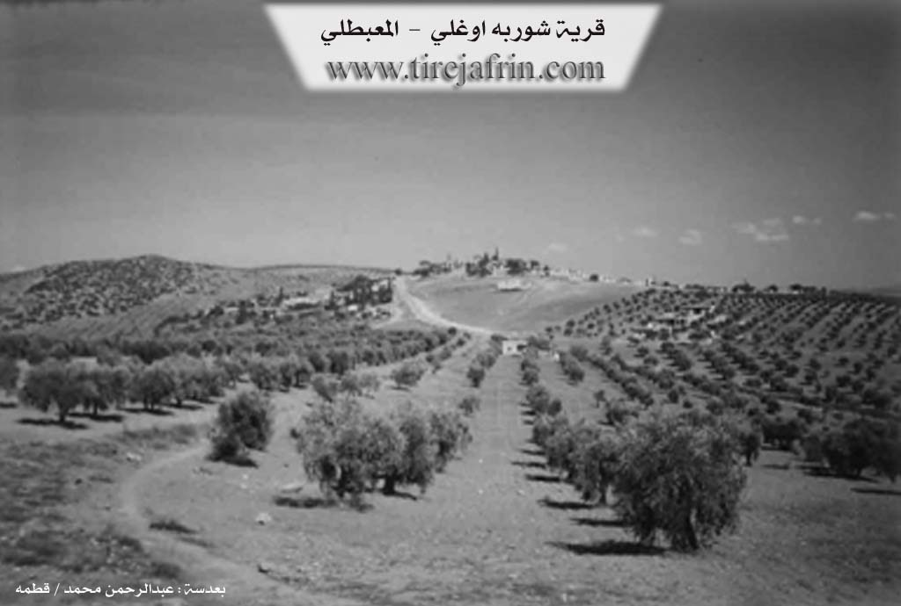
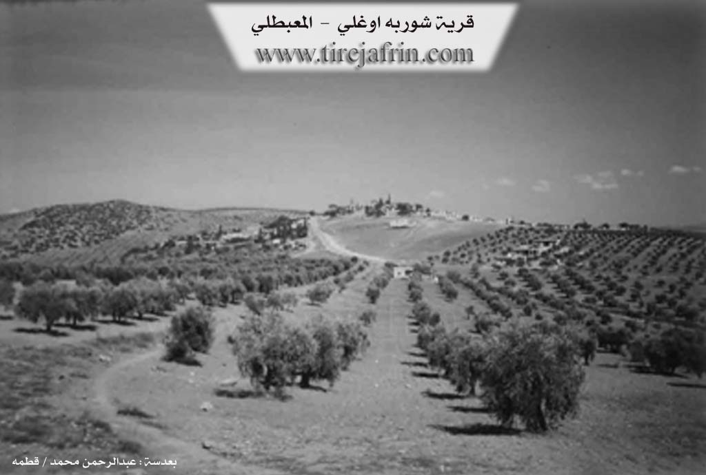

General Information
Nahiya (Subdistrict)
Mabeta
Also Known As
Al-Shorba, Shorba Oghli, Şorbe, Şûrbe, Şûrbê, Šorbe, الشوربة, شوربه اوغلي, شوربه اوغلي
Tribes
Omkan
Families, Clans, etc.
Şûrbe
Foundation Date
1600, 1800
Size

Photos
 

Foundation/Origin Information of Şorbe
Aslan Agha Shorba was the first to inhabit the village since ancient times and he is the founder of the village.
Source: TirejAfrin Site
The village was destroyed on two separate occasions for resisting occupying forces. In 1750 and again in 1921. The main house "Oda" was built over 300 years ago by Emîn Şûrbe. It belongs to the Omkan tribe.
Source: Ax û Walat Transcript
Possible Village Name Meaning of Şorbe
The name is taken from the soup dish. It is said that about two centuries ago, there was a famine, so the women of the village would cook soup and distribute it to the people, so the village was named Shorba. The old name of the village site was "Marisha".
Source: TirejAfrin Site
The village's name originates from an event approximately 400 years ago when a great famine struck the region. During this time, the founding Şûrbe family famously provided soup (şorbe) to all travelers and hungry people.
Source: Ax û Walat Transcript
Summaries
I. Summary from TirejAfrin Site of Şorbe (English)
According to the book 'جبل الكرد' 'Mountain of the Kurds' (عفرين) Geographic Study by Dr. Mohammed Abdo Ali:
Gundî Šorbe (شوربه أوغلو), Shorba Oghlu (شوربه أوغلو), Al-Shorba (الشوربة) /1151n - 300ha - 17km - 520m/:
- The name is taken from the soup dish, and it is said that about two centuries ago, there was a famine in the region, so the women of the village would cook soup and distribute it to the people of the village and passersby, so the village was named Shorba (شوربه). As for the old name of the village site, it was "Marisha" (مريشا) without knowing its meaning.
- This small village is located on a hilltop, sloping from its northwestern side toward Ziravkê valley (وادي زِراڤكه). From it originally comes Agha Aslan (آغا أصلان), one of the resistance leaders against the French Mandate, and the well-known lawyer Ismat Omar al-Shuyui (عصمت عمر الشيوعي) and former member of the People's Assembly.
According to the book: Afrin... Its River and Green Hills by writer Abdul Rahman Mohammed (عبدالرحمن محمد) from Qatmah village (قرية قطمه):
Shorba Oghli (شوربه اوغلي): A village in Mountain of the Kurds (جبل الكرد), belonging to Mabetli District (ناحية المعبطلي), Afrin City region (منطقة عفرين), Aleppo Governorate (محافظة حلب).
It is a small village in the central part of the mentioned mountain, on the top of a limestone hill that slopes steeply toward the northwest in the direction of Zirafka valley (وادي زرافكة). It is crossed by water streams flowing southward and eastward to end in Afrin City river valley. It is 17km away from Mabetli town toward the northeast. Its soil is fertile clay. It is bounded to the north by a slope and ravine and Sili valley (وادي سيلي) and a high mountain chain of Hawari mountain (جيل هواري) and Hassan Dirli village (قرية حسن ديرلي) and Tag Oba Si village (قرية طاغ أوبه سي), and to the south by a slope and Sili valley (وادي سيلي) planted with olive trees and Kamruk village (قرية كمروك), and to the west by a slope and Sili valley (وادي سيلي) planted with olive trees and Semalka village (قرية سيمالك), and to the east by a slope and Sili valley (وادي سيلي) and mountain elevations planted with olive trees and 17 April Dam (سد 17نيسان) and Medanki village (قرية ميدانكي). The number of its houses is about 65 houses and its population is about 450 people. Its old dwellings are stone-clay with flat wooden roofs, and all the old houses in the center of the village have been demolished and replaced by modern cement stone houses, extending toward the south and west. It has an electricity network and water network connected to artesian wells located at the bottom of the village from the southern side. It has an elementary school and is connected by a paved road to the district center and neighboring villages. The residents work in rain-fed agriculture on an area of 300 hectares with grains, olive trees, and vines, in addition to raising sheep and goats. Among its most important families is the family of Aslan Agha Shorba (أصلان آغا شوربه), the first to inhabit the village since ancient times and he is the founder of the village. Aslan Agha (أصلان آغا) was among the fighters against the French occupation with revolutionaries such as: Ahmed Ruto (أحمد روطو), Sheikh Rashid Ibo (شيخ رشيد إيبو), and others.
Among the holders of higher degrees in the village: Anas Mansour (أنس منصور) / Doctorate in Agriculture / France
Village mayor: Rashid Muslim Omar (رشيد مسلم عمر)
Prepared and implemented by: Tire Afrin website manager: Abdul Rahman Haji Othman (عبدالرحمن حاجي عثمان)
20/12/2013
II. Summary from Ax û Walat Transcript of Şorbe
The village of Şûrbe in Afrin derives its name from a traditional yogurt-based soup, Şûrbe Donî, a dish that has been prepared by the community since the time of their "fathers and grandfathers." This ancestral recipe consists of yogurt or ayran (dew), wheat grains (dan), and chickpeas (nok), and is cooked over an open fire. This dish is part of a broader culinary heritage that, in the past ("berê"), included a variety of foods prepared for communal celebrations like weddings (dawet), such as kofte (kibbeh), sermîsok, dolma, şîşperek, and qewrandî. A resident originally from Baalbek, Lebanon, who has lived in the region for over thirty years, highlighted several distinct Afrini Kurdish traditions she observed. In local weddings, it is customary to publicly display the bride's trousseau (cîhaz) for everyone to see, and for the bride's family to provide a wedding ring for the groom, practices different from her own Lebanese background. She also noted learning to cook specific Afrini dishes like Boronîye and Donik, which were previously unknown to her.
II. Summary from Ax û Walat Transcript of Şorbe 2
The village of Şûrbe, located in the Mabeta district and belonging to the Omkan tribe, has a rich history rooted in both charity and conflict. According to oral tradition passed down through generations, the village's name originates from an event approximately 400 years ago when a great famine struck the region. During this time, the founding Şûrbe family famously provided soup (şorbe) to all travelers and hungry people, cementing the village's identity. This history of resilience was tested through significant hardship; the village was destroyed on two separate occasions for resisting occupying forces. In 1750, during a revolution against the Ottomans, six men from the Şûrbe family were executed on a nearby mound called Tel Dêrî. Later, in 1921, the village was again destroyed by French forces using cannons and aircraft. The social and political life of the community was centered in the "Oda," a main house built over 300 years ago by Emîn Şûrbe, which served as a guesthouse and a place where tribal leaders like Aslan Axa would resolve disputes. Alongside this history, the village maintains a strong cultural heritage, including a 400-year-old tradition of traditional bonesetting (Jebarcî), a craft still practiced by local healers today.